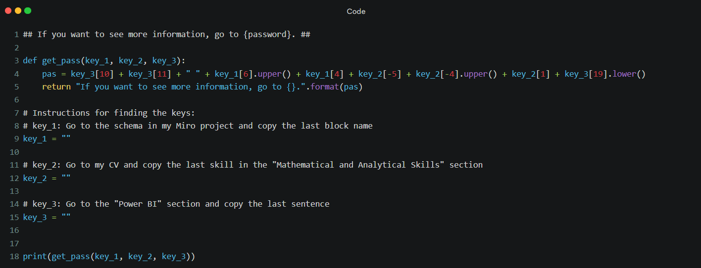
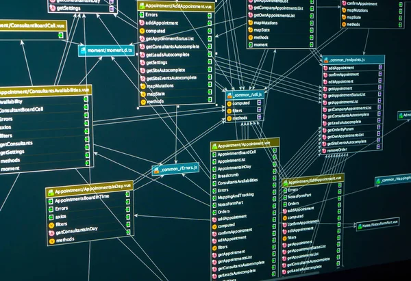

## If you want to see more information, go to {password}. ##
def get_pass(key_1, key_2, key_3):
pas = key_3[10] + key_3[11] + " " + key_1[6].upper() + key_1[4] + key_2[-5] + key_2[-4].upper() + key_2[1] + key_3[19].lower()
return "If you want to see more information, go to {}.".format(pas)
# Instructions for finding the keys:
# key_1: Go to the schema in my Miro project and copy the last block name
key_1 = ""
# key_2: Go to my CV and copy the last skill in the "Mathematical and Analytical Skills" section
key_2 = ""
# key_3: Go to the "Power BI" section and copy the last sentence
key_3 = ""
print(get_pass(key_1, key_2, key_3))

Explore the EthNewsPredictor project to see how I applied my data analysis skills to predict Ethereum price movements based on news sentiment. This project highlights my proficiency in data preprocessing, sentiment analysis, and predictive modeling.
Visit the project’s GitHub profile to view the source code, detailed documentation, and additional insights. Your feedback and collaboration are always welcome!
Scheme

Welcome to the EthNewsPredictor project scheme section. Below, you will find a detailed scheme outlining the structure and workflow of this project. This visual representation helps to understand the project’s entire process from start to finish.
Welcome to the EthNewsPredictor Power BI section. Here, you can explore the interactive dashboards and visualizations created to analyze and present the project’s data insights. These reports highlight my ability to transform raw data into actionable insights using Power BI.